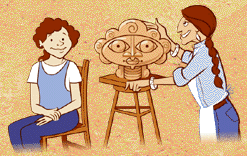

|  |
Some people think the shrine head may have been a portrait of a particular woman.Like many portraits by photographers or painters today, it has some facial features that are idealized and some that are realistic.
Art historians like me believe shrine heads were meant more as commemorations of kings and queens and other people of high status.
|